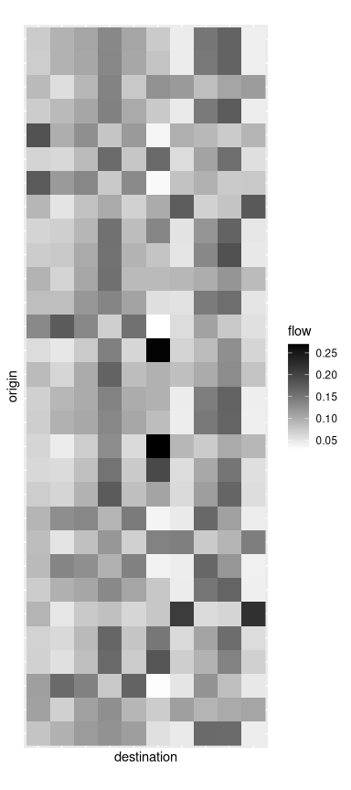
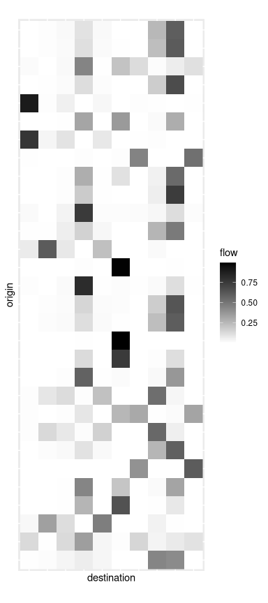
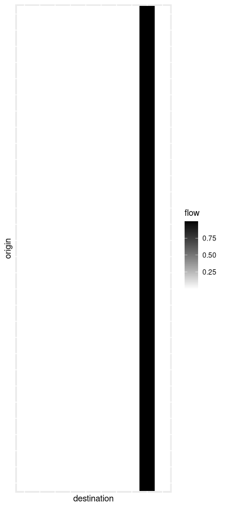
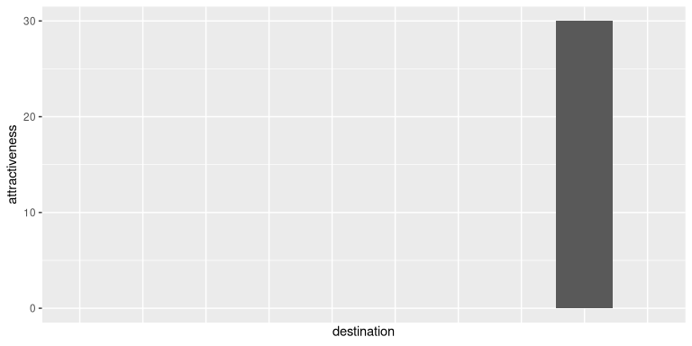

blvim implements A. Wilson’s Boltzmann–Lotka–Volterra (BLV) interaction model. The model is described in Wilson, A. (2008), “Boltzmann, Lotka and Volterra and spatial structural evolution: an integrated methodology for some dynamical systems”, J. R. Soc. Interface, 5:865–871.
The package’s primary goal is to provide a fast implementation of the BLV model, complete with a collection of tools designed to explore the results through statistical summaries and graphical representations. The secondary goal is to facilitate the systematic assessment of how model parameters impact the results, again using summaries and graphical representations (see vignette("grid") for details on this aspect).
Installation
You can install the development version of blvim from GitHub with:
# install.packages("pak")
pak::pak("fabrice-rossi/blvim")Spatial interaction models
Spatial interaction models aim to estimate flows between locations, such as workers commuting from residential zones to employment zones. The blvim package focuses on the maximum entropy models developed by Alan Wilson. See vignette("theory") for the theoretical background.
In practice, if we have \(n\) origin locations and \(p\) destination locations, the goal is to compute a flow matrix \((Y_{ij})_{1\leq i\leq n, 1\leq j\leq p}\), where \(Y_{ij}\) is the flow from origin \(i\) to destination \(j\). This computation relies on characteristics of the origin and destination locations, along with a matrix of exchange difficulties, known as a cost matrix, \((c_{ij})_{1\leq i\leq n, 1\leq j\leq p}\). For example, \(c_{ij}\) can represent the distance between origin \(i\) and destination \(j\).
Usage
The package is loaded in a standard way.
Input data
To compute a spatial interaction model with blvim, you need at least a cost matrix. The package comes with distance data for a selection of large French cities. We use the 30 largest ones as origin locations and the 20 smallest ones as destination locations. The cost matrix is the distance between the cities (in meters).
## 30 largest cities
origins <- french_cities[1:30, c("th_longitude", "th_latitude")]
## 20 smallest cities
destinations <- french_cities[(nrow(french_cities) - 19):nrow(french_cities), c("th_longitude", "th_latitude")]
## cost matrix
cost_matrix <- french_cities_distance[1:30, (nrow(french_cities) - 19):nrow(french_cities)]
rownames(cost_matrix) <- french_cities[1:30, "name"]
colnames(cost_matrix) <- french_cities[(nrow(french_cities) - 19):nrow(french_cities), "name"]Additionally, since we focus on production-constrained models, we must specify the production for each origin location (a vector of positive values \((X_i)_{1\leq i\leq n}\)). Here, we assume a common unitary production.
Finally, the simple static model requires an attractiveness value for each destination location, a vector of positive values \((Z_j)_{1\leq j\leq p}\). We again assume a common unitary attractiveness.
We could use the population of the cities as production constraints for instance.
Static models
In Wilson’s production-constrained maximum entropy model, the flows are given by
\[ Y_{ij} = \frac{X_iZ_j^{\alpha}\exp(-\beta c_{ij})}{\sum_{k=1}^pZ_k^{\alpha}\exp(-\beta c_{ik})}, \]
where \(\alpha\) is a return-to-scale parameter and \(\beta\) is the inverse of a cost scale parameter. Note that the flow matrix is production-constrained, meaning that the total outgoing flow from any origin location is equals the production of that location:
\[ \forall i,\quad X_i=\sum_{j=1}^{p}Y_{ij}. \]
The model is obtained using the static_blvim() function:
a_model <- static_blvim(cost_matrix, X, alpha = 1.1, beta = 1 / 500000, Z)
a_model
#> Spatial interaction model with 30 origin locations and 20 destination locations
#> • Model: Wilson's production constrained
#> • Parameters: return to scale (alpha) = 1.1 and inverse cost scale (beta) =
#> 2e-06Several functions are provided to extract parts of the result. In particular flows() returns the flow matrix \(Y\).
a_model_flows <- flows(a_model)which can be displayed using, for instance, the image() function.
par(mar = rep(0.1, 4))
image(t(a_model_flows)[, 30:1],
col = gray.colors(20, start = 1, end = 0),
axes = FALSE,
frame = TRUE
)In this representation, each row shows the flows from one origin location to all destination locations. The package also provides a ggplot2::autoplot() function, which can be used as follows:
library(ggplot2)
autoplot(a_model, "full") +
scale_fill_gradient(low = "white", high = "black") +
coord_fixed()
b_model <- static_blvim(cost_matrix, X, alpha = 1.1, beta = 1 / 100000, Z)
b_model
#> Spatial interaction model with 30 origin locations and 20 destination locations
#> • Model: Wilson's production constrained
#> • Parameters: return to scale (alpha) = 1.1 and inverse cost scale (beta) =
#> 1e-05
autoplot(b_model) +
scale_fill_gradient(low = "white", high = "black") +
coord_fixed()
As the two figures above exemplify, different values of the parameters \(\alpha\) and \(\beta\) result in more or less concentrated flows.
Dynamic models
A. Wilson’s Boltzmann–Lotka–Volterra (BLV) interaction model builds upon the production-constrained maximum entropy model. The core idea is to update the attractiveness of the destination locations based on their incoming flows.
Ideally, we aim for the following condition to hold in the limit:
\[ Z_j =\sum_{i=1}^{n}Y_{ij}, \]
where the flows are given by the equations above. The model is estimated using the blvim() function as follows.
a_blv_model <- blvim(cost_matrix, X, alpha = 1.1, beta = 1 / 500000, Z)
a_blv_model
#> Spatial interaction model with 30 origin locations and 20 destination locations
#> • Model: Wilson's production constrained
#> • Parameters: return to scale (alpha) = 1.1 and inverse cost scale (beta) =
#> 2e-06
#> ℹ The BLV model converged after 4800 iterations.Notice that we start with some initial values of the attractiveness, but the final values are different. These final values can be obtained using the attractiveness() function (and visualised here using a bar plot).
par(mar = c(0.1, 4, 1, 0))
a_final_Z <- attractiveness(a_blv_model)
barplot(a_final_Z)In this particular example, one destination location acts as a global attractor of all the flows. This pattern is also visible in the final flow matrix.
autoplot(a_blv_model) +
scale_fill_gradient(low = "white", high = "black")
The autoplot() function can also be used to show the destination flows or the attractivenesses values:
autoplot(a_blv_model, "attractiveness", with_names = TRUE) +
coord_flip()
Naturally, the results are strongly influenced by the parameters, as shown in this second example.
b_blv_model <- blvim(cost_matrix, X, alpha = 1.1, beta = 1 / 50000, Z)
b_blv_model
#> Spatial interaction model with 30 origin locations and 20 destination locations
#> • Model: Wilson's production constrained
#> • Parameters: return to scale (alpha) = 1.1 and inverse cost scale (beta) =
#> 2e-05
#> ℹ The BLV model converged after 5700 iterations.
autoplot(b_blv_model, "attractiveness", with_names = TRUE) +
coord_flip()
autoplot(b_blv_model, with_names = TRUE) +
scale_fill_gradient(low = "white", high = "black") +
theme(axis.text.x = element_text(angle = 90))bvlim offers a collection of graphical representations that can leverage the data associated to the origin and destination locations. For instance, we can display the full flows using geographical coordinates of the cities.
origin_positions(b_blv_model) <- as.matrix(origins)
destination_positions(b_blv_model) <- as.matrix(destinations)
autoplot(b_blv_model,
with_positions = TRUE,
arrow = arrow(length = unit(0.01, "npc"))
) +
scale_linewidth(range = c(0, 1.5)) +
coord_sf(crs = "epsg:4326") +
geom_point(
data = origins,
mapping = aes(x = th_longitude, y = th_latitude), inherit.aes = FALSE,
color = "blueviolet", alpha = 0.5, size = 3
) +
geom_point(
data = destinations,
mapping = aes(x = th_longitude, y = th_latitude), inherit.aes = FALSE,
color = "darkorange", alpha = 0.5, size = 3
)